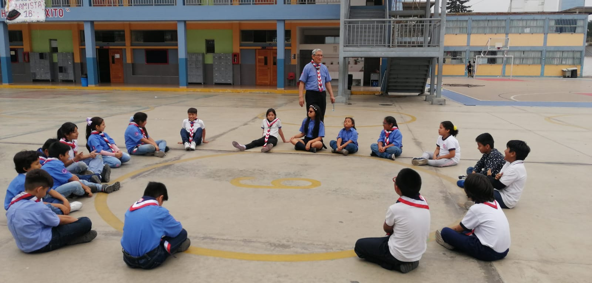
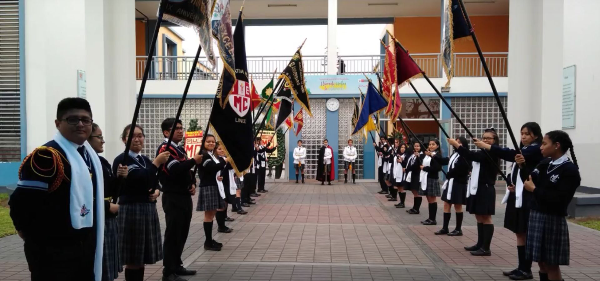
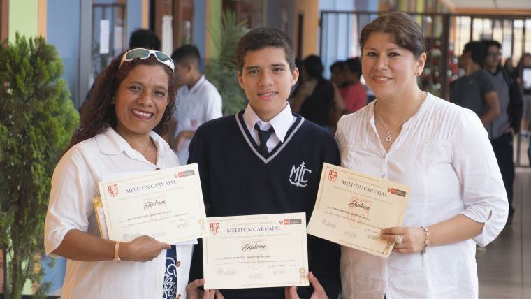
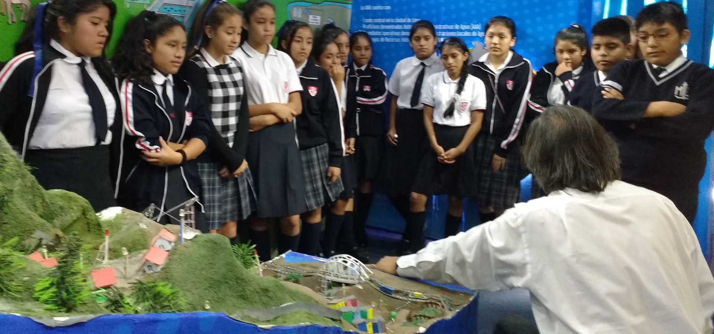

INSTITUCIÓN EDUCATIVA EMBLEMÁTICO N°1070 MELITÓN CARVAJAL
RESEÑA DE LA INSTITUCIÓN EDUCATIVA EMBLEMÁTICA N°1070 MELITÓN CARVAJAL
Mediante el decreto de urgencia Nº 004‐2009 dado por el segundo gobierno del presidente Alan García el 9 de enero del 2009 se creó el Programa Nacional de Recuperación de las Instituciones Públicas Educativas Emblemáticas y Centenarias, con el fin de modernizar y reforzar la infraestructura de 20 colegios en Lima y Callao, y otros 21 en el resto del país. Su objetivo era alcanzar, en las escuelas y colegios estatales, una educación de excelencia con igualdad de oportunidades para todos.
El colegio Melitón Carvajal fue incluido en dicho programa y se empezaron inmediatamente las obras, en las que se invirtieron 19.169.550 nuevos soles (alrededor de 7 millones de dólares). La estructura remodelada fue inaugurada y entregada a la comunidad el día 26 de mayo del 2010, en una ceremonia que contó con la presencia de presidente Alan García y el ministro de Educación, José Antonio Chang Escobedo, este último exalumno carvajalino.
La estructura se eleva en 20.000 de los 50.000 m² del recinto y alberga ahora un centro de recursos tecnológicos, laboratorios de biología, química, física, talleres de mecánica, producción, carpintería, electricidad, electrónica, computación, industria del vestido, gastronomía y cosmetología. Además, un amplio gimnasio bien equipado, un estadio con césped sintético, pista atlética y una piscina. Sin embargo, al igual que en el resto de los colegios emblemáticos reinaugurados por el presidente García, se ha cuestionado el hecho que muchas de las obras estén todavía inconclusas, así como se han denunciado indicios de supuestas irregularidades en los costos de la remodelación.


Fundado en 1948
El Colegio Nacional Melitón Carvajal fue fundado en 1948 en el distrito de Lince, Lima, Perú. Su actual sede fue inaugurada en 1950 y remodelada en el 2010. Cuenta con educación inicial, primaria y secundaria (técnica y humanidades) de menores; y una sección nocturna (primaria y secundaria de adultos).
El colegio fue fundado por Resolución 025 del 23 de enero de 1948, durante el gobierno constitucional de José Luis Bustamante y Rivero, con la denominación de Colegio Nacional. Funcionó inicialmente en una vieja casona de la avenida Petit Thouars, Nº 1400, en el distrito de Lince, albergando a alumnos excedentes del Colegio Nacional Nuestra Señora de Guadalupe.
Dos años después se trasladó a una nueva sede más amplia, de 50.184 m², siendo inaugurado con el rango de Gran Unidad Escolar, el día 15 de abril de 1950, durante el gobierno del general Manuel A. Odría. Constituyó un acontecimiento relevante que contó con la presencia del mismo Odría (entonces presidente de la Junta Militar de Gobierno), su esposa María Delgado de Odría, ministros de estado, miembros del cuerpo diplomático y otras personalidades. Fue la primera de las grandes unidades escolares que formaron parte de un vasto plan de construcciones en toda la República, que llevó adelante dicho gobierno conocido después como el Ochenio de Odría.
Fue bautizado con el nombre de un ilustre marino peruano que luchó en la Guerra del Pacífico: Manuel Melitón Carvajal Ambulodegui (1847-1935), compañero del almirante Miguel Grau y uno de los comandantes del monitor Huáscar, que tuvo un heroico comportamiento en el combate de Angamos, donde quedó gravemente herido.
Sus primeros directores fueron el profesor Juan F. Franco López (1948-50) y el filósofo Julio A. Chiriboga Vera (1950-52).
Nuestra Misión
Somos una Institución Educativa Emblemática de Lince, con infraestructura moderna y recursos educativos acorde con los avances de la ciencia y tecnología, que brinda una educación en valores, promoviendo el emprendimiento, la prevención ante situaciones de riesgo, la conciencia ambiental y democrática; que prepara al estudiante para actuar positivamente en la sociedad.

Nuestra Visión
Ser una institución eduactiva emblemática acreditada, lider en calidad educativa, con una propuesta pedagógica en permanente innovación, con personal calificado y comprometido que, junto a los padres de familia, forma estudiantes íntegros, emprendedores, con identidad cultural y conciencia ambiental; damas y caballeros carvajalinos agentes de cambio en la sociedad.

Historia Cronológica
1948
Fundación
Fundado el 23 de enero, durante el gobierno de José Luis Bustamante con la denominación del Colegio Nacional, albergando a alumnos excedentes.
1950
Traslado
Luego de 2 años se trasladó a una nueva sede y fue inaugurada como Gran Unidad Escolar con el nombre del marino peruano Melitón Carvajal durante el gobierno de Manuel Odría.
1952
Primeros directivos
Sus primeros directivos fueron: El profesor Juan F. Franco Lopez y el filósofo Julio Chiriboga Vera.
2003
Asociación Carvajalina
Se realizó una reunión de exalumnos en el cual se declaró la conformación de la Asociación Carvajalina.Actualmente cuenta con más de 400 asociados.
2009
Decreto
Mediante un decreto de urgencia N° 004-2009, dado en el gobierno de Alan García, se creó el Programa Nacional de Recuperión de las Instituciones Educativas emblemáticas y centenarias.
2010
Estructura Moderna
El colegio fue remodelado con una estructura moderna incluyendo nuevos centros tecnológicos y fue inaugurado el 26 de mayo en una ceremonia junto al expresidente Alan Garcia y exalumno carvajalino José Antonio Chang, con el nombre de Institución Educativa Melitón Carvajal.
2015
Jornada Escolar Completa
En ese año mediante la Resolución Ministerial, se aprobó la Implementación del Desarrollo del JEC (Jornada Escolar Completa) incluyendo I.E.E Melitón Carvajal. Nueva gestión e inicio de implementación y modernización en las aulas, laboratorios, así como talleres técnicos y artísticos.
2016
Copa Lince
Las chicas de la I.E.E Melitón Carvajal, se coronaron campeones en voley del torneo interescolar COPA LINCE 2016.
2020
Pandemia
En el contexto de la pandemia de la COVID-19, la institucioón educativa optó por el uso del classroom y meet, además del Programa Aprendo en Casa del MINEDU, para continuar con nuestros aprendizajes mediante las clases virtuales.
2023
I.E. de Formación Técnica
Se reincorpora la institución al grupo de I.E. de Formación técnica, brindando posibilidades a los estudiantes para egresar con un título técnico o convalidar estudios, gracias a los convenios con CETPROS y/o Institutos tecnológicos.
DIRECTIVOS
DIRECTORA
Consuelo Soto Meza
SUBDIRECTOR DE ADMINISTRACIÓN
Rubén Ramos Morales
Horario Escolar
L – V : 8am – 3:30pm
Dirección
Av. Leonidas Yerovi 2120 Lince, Lima – Perú